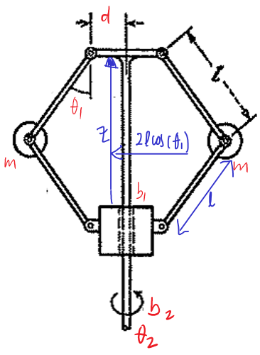
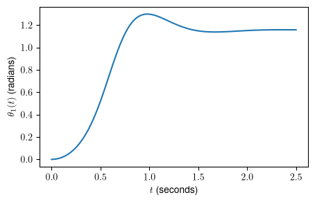

System Modeling: Flyball Governor#
Preparations#
from IPython.display import HTML
import numpy as np
import base64
import matplotlib.pyplot as plt
plt.rcParams.update({
"text.usetex": True,
"font.family": "Helvetica",
"font.size": 10,
})
from sympy import *
from mathprint import *
# https://stackoverflow.com/questions/49145059/how-to-change-printed-representation-of-functions-derivative-in-sympy
latexReplaceRules = {
# r'{\left(t \right)}':r' ',
r'\frac{d}{d t}':r'\dot',
r'\frac{d^{2}}{d t^{2}}':r'\ddot',
}
def latexNew(expr,**kwargs):
retStr = latex(expr,**kwargs)
for _,__ in latexReplaceRules.items():
retStr = retStr.replace(_,__)
return retStr
init_printing(use_unicode=False)
init_printing(latex_printer=latexNew)
def display_gif(fn):
b64 = base64.b64encode(open(fn,'rb').read()).decode('ascii');
display(HTML(f'<img src="data:image/gif;base64,{b64}" />'));
Declare the necessary symbols:
t = symbols('t', real=True)
theta1 = Function('theta1')
theta2 = Function('theta2')
tau = symbols('tau', real=True)
J, m, l, d, g, b1, b2 = symbols('J m l d g b1 b2', real=True, nonnegative=True)

Kinetic energy#
Let us describe the two motions that contribute to kinetic energy:
upward-downward rotations around \(\theta_1\) \(\rightarrow T_1\)
planar continous rotations around \(\theta_2\) \(\rightarrow T_2\)
Note that we use parallel axis theorem to compute the get the correct momen of inertia about the given rotation axis.
T1 = simplify( 2*1/2*(J+m*l**2)*diff(theta1(t) ,t)**2 )
T2 = simplify( 2*1/2*(J+m*(l*sin(theta1(t))+d)**2)*diff(theta2(t) ,t)**2 )
mprint('T_1=' + latexNew(T1))
mprint('T_2=' + latexNew(T2))
Potential energy#
V = 2*m*g*l*(1-cos(theta1(t)))
mprint('V=' + latexNew(V))
Dissipassion#
We introudce two damping elements that cause energy lost:
\(R_1\): dissipation by the linear bushing moving along the vertical rod.
\(R_2\): dissipation by the rotating vertical rod.
z = l-l*cos(theta1(t))
zdot = diff(z, t)
R1 = 1/2*b1*zdot**2
R2 = 1/2*b2*diff(theta2(t))**2
mprint('R_1=' + latexNew(R1))
mprint('R_2=' + latexNew(R2))
Euler–Lagrange equations#
Now, we shall derive the Euler-Lagrange euqations step by step.
T = T1 + T2 # Total kinetic energy
L = T - V # The Lagrangian
dL_dTh = Matrix([diff(L, theta1(t)), diff(L, theta2(t))])
mprint('\\frac{dL}{d\\theta}=' + latexNew(dL_dTh))
dL_dThdot = simplify(Matrix([diff(L, diff(theta1(t), t)), diff(L, diff(theta2(t), t))]))
mprint('\\frac{dL}{d\\dot{\\theta}}=' + latexNew(dL_dThdot) )
dR1_dThdot = simplify(Matrix([diff(R1, diff(theta1(t), t)), diff(R1, diff(theta2(t), t))]))
mprint('\\frac{dR_1}{d\\dot{\\theta}}=' + latexNew(dR1_dThdot) )
dR2_dThdot = simplify(Matrix([diff(R2, diff(theta1(t), t)), diff(R2, diff(theta2(t), t))]))
mprint('\\frac{dR_2}{d\\dot{\\theta}}=' + latexNew(dR2_dThdot) )
dL_dThdot_dt = simplify(Matrix([diff(diff(L, diff(theta1(t), t)),t) , diff(diff(L, diff(theta2(t), t)), t)]))
mprint('\\frac{dL}{d\\dot{\\theta} dt}=' + latexNew(dL_dThdot_dt) )
eq = simplify(dL_dThdot_dt - dL_dTh + dR1_dThdot + dR2_dThdot)
mprint('\\frac{dL}{d\\dot{\\theta} dt} - \\frac{dL}{d\\theta} + \\frac{dR_1}{d\\dot{\\theta}} + \\frac{dL}{d\\dot{\\theta} dt}=' + latexNew(eq) )
Equation of motions#
By rewriting the Euler-Lagrange equations, we can then express the system’s equation of motions.
eqs = Eq(eq, Matrix([0 , tau]))
odes = solve(eqs, [diff(theta1(t), t, t), diff(theta2(t), t, t)])
ode1 = simplify(odes[diff(theta1(t), t, t)])
mprintb(" \\ddot{\\theta_1}(t) = ", latexNew(ode1))
ode2 = simplify(odes[diff(theta2(t), t, t)])
mprintb(" \\ddot{\\theta_1}(t) = ", latexNew(ode2))
Numerical model#
For demostration purposes, we will set some arbitrary numerical values to the parameters such that we can simulate the system.
We also need to define how we are going to actuate the system. The ideal input to the system is the torque: \( \tau(t) \). However, we can make the demonstration simpler by ignoring the second equation (ode2). This is possible if we assume we can apply instantaneous rotation (\( \dot{\theta}_2 \)) to the base of the device. Hence, in thise case we are only interested with how \( \dot{\theta}_2 \) afffects \( \theta_1 \) and \( \dot{\theta}_1 \).
m_ = 0.1
J_ = 0.01
l_ = 0.2
g_ = 9.8
b1_ = 5
b2_ = 0.1
d_ = 0.02
RPM_ = 100*0.10472 #converting RPM to rad/s
ode1n = simplify(ode1.subs(([m, m_],
[b1, b1_],
[b2, b2_],
[J, J_],
[l, l_],
[d, d_],
[g, g_])))
mprintb(" \\ddot{\\theta_1}(t) = ", latexNew(ode1n))
ode2n = simplify(ode2.subs(([m, m_],
[b1, b1_],
[b2, b2_],
[J, J_],
[l, l_],
[d, d_],
[g, g_],
[tau, 0])))
mprintb(" \\ddot{\\theta_2}(t) = ", latexNew(ode2n))
Numerical solutions#
After plugging all parameters into the model, we can now solve the model numerically and obtain the motions as the results. To do this, we use the ODE solver that can be found in scipy.integrate. Also, we must put the model into its state-space form. The ODE solver takes the model only in a state-space form.
import scipy.integrate
import matplotlib.pyplot as plt
Complete state-space model#
Let us introduce some new variables to descrive the system’s states: \(y=[y_0, y_1, y_2, y_3]\), where:
\( y_0 = \theta_1 \)
\( y_1 = \dot{\theta}_1 \)
\( y_2 = \theta_2 \)
\( y_3 = \dot{\theta}_2 \)
Hence, we also have: \( \dot{y}=[\dot{y}_0, \dot{y}_1, \dot{y}_2, \dot{y}_3] \), where:
\( \dot{y}_0 = \dot{\theta_1} \)
\( \dot{y}_1 = \ddot{\theta}_1 \)
\( \dot{y}_2 = \dot{\theta_2} \)
\( \dot{y}_3 = \ddot{\theta}_2 \)
# y[0] --> theta1
# y[1] --> theta1d
# y[2] --> theta2
# y[3] --> theta2d
y = symbols( 'y:4' )
ode1n_ = simplify(ode1n.subs(([diff(theta1(t), t), y[1]],
[diff(theta2(t), t), y[3]],
[theta1(t), y[0]],
[theta2(t), y[2]])))
ode2n_ = simplify(ode2n.subs(([diff(theta1(t), t), y[1]],
[diff(theta2(t), t), y[3]],
[theta1(t), y[0]],
[theta2(t), y[2]])))
ydot = Matrix([y[1], ode1n_, y[3], ode2n_,])
mprintb("\\dot{y}=", latexNew(ydot))
Partial state-space model#
This is the simpler model where we only take the first two rows.
ydots = [y[1], ode1n_.subs(y[3], RPM_)]
mprintb("\\dot{y}=", latexNew(Matrix(ydots)))
f = lambdify((t, y[0:2]), ydots)
y0 = [0., 0.]
tend = 2.5
t_eval = np.linspace(0, tend, 101)
sol = scipy.integrate.solve_ivp(f, (0, tend), y0, t_eval=t_eval)
%matplotlib inline
fig, ax = plt.subplots(figsize=(5,3))
ax.plot(sol.t, sol.y[0,:], markeredgewidth=2)
ax.set_xlabel(" $t$ (seconds) ")
ax.set_ylabel(" $\\theta_1 (t) $ (radians) ")
plt.show()

MovieWriter stderr:
convert: unexpected end-of-file '-': No such file or directory @ error/rgb.c/ReadRGBImage/250.
convert: no images defined `./images/flyball.gif' @ error/deprecate.c/ConvertImageCommand/3366.
---------------------------------------------------------------------------
TypeError Traceback (most recent call last)
File ~/miniconda3/envs/py.3.12.4/lib/python3.12/site-packages/matplotlib/animation.py:228, in AbstractMovieWriter.saving(self, fig, outfile, dpi, *args, **kwargs)
227 try:
--> 228 yield self
229 finally:
File ~/miniconda3/envs/py.3.12.4/lib/python3.12/site-packages/matplotlib/animation.py:1146, in Animation.save(self, filename, writer, fps, dpi, codec, bitrate, extra_args, metadata, extra_anim, savefig_kwargs, progress_callback)
1145 frame_number += 1
-> 1146 writer.grab_frame(**savefig_kwargs)
File ~/miniconda3/envs/py.3.12.4/lib/python3.12/site-packages/matplotlib/animation.py:358, in MovieWriter.grab_frame(self, **savefig_kwargs)
357 # Save the figure data to the sink, using the frame format and dpi.
--> 358 self.fig.savefig(self._proc.stdin, format=self.frame_format,
359 dpi=self.dpi, **savefig_kwargs)
File ~/miniconda3/envs/py.3.12.4/lib/python3.12/site-packages/matplotlib/figure.py:3515, in Figure.savefig(self, fname, transparent, **kwargs)
3514 _recursively_make_axes_transparent(stack, ax)
-> 3515 self.canvas.print_figure(fname, **kwargs)
File ~/miniconda3/envs/py.3.12.4/lib/python3.12/site-packages/matplotlib/backend_bases.py:2289, in FigureCanvasBase.print_figure(self, filename, dpi, facecolor, edgecolor, orientation, format, bbox_inches, pad_inches, bbox_extra_artists, backend, **kwargs)
2288 with cbook._setattr_cm(self.figure, dpi=dpi):
-> 2289 result = print_method(
2290 filename,
2291 facecolor=facecolor,
2292 edgecolor=edgecolor,
2293 orientation=orientation,
2294 bbox_inches_restore=_bbox_inches_restore,
2295 **kwargs)
2296 finally:
File ~/miniconda3/envs/py.3.12.4/lib/python3.12/site-packages/matplotlib/backend_bases.py:2146, in FigureCanvasBase._switch_canvas_and_return_print_method.<locals>.<lambda>(*args, **kwargs)
2145 skip = optional_kws - {*inspect.signature(meth).parameters}
-> 2146 print_method = functools.wraps(meth)(lambda *args, **kwargs: meth(
2147 *args, **{k: v for k, v in kwargs.items() if k not in skip}))
2148 else: # Let third-parties do as they see fit.
File ~/miniconda3/envs/py.3.12.4/lib/python3.12/site-packages/matplotlib/backends/backend_agg.py:473, in FigureCanvasAgg.print_raw(self, filename_or_obj, metadata)
472 raise ValueError("metadata not supported for raw/rgba")
--> 473 FigureCanvasAgg.draw(self)
474 renderer = self.get_renderer()
File ~/miniconda3/envs/py.3.12.4/lib/python3.12/site-packages/matplotlib/backends/backend_agg.py:438, in FigureCanvasAgg.draw(self)
436 with (self.toolbar._wait_cursor_for_draw_cm() if self.toolbar
437 else nullcontext()):
--> 438 self.figure.draw(self.renderer)
439 # A GUI class may be need to update a window using this draw, so
440 # don't forget to call the superclass.
File ~/miniconda3/envs/py.3.12.4/lib/python3.12/site-packages/matplotlib/artist.py:94, in _finalize_rasterization.<locals>.draw_wrapper(artist, renderer, *args, **kwargs)
92 @wraps(draw)
93 def draw_wrapper(artist, renderer, *args, **kwargs):
---> 94 result = draw(artist, renderer, *args, **kwargs)
95 if renderer._rasterizing:
File ~/miniconda3/envs/py.3.12.4/lib/python3.12/site-packages/matplotlib/artist.py:71, in allow_rasterization.<locals>.draw_wrapper(artist, renderer)
69 renderer.start_filter()
---> 71 return draw(artist, renderer)
72 finally:
File ~/miniconda3/envs/py.3.12.4/lib/python3.12/site-packages/matplotlib/figure.py:3282, in Figure.draw(self, renderer)
3281 self.patch.draw(renderer)
-> 3282 mimage._draw_list_compositing_images(
3283 renderer, self, artists, self.suppressComposite)
3285 renderer.close_group('figure')
File ~/miniconda3/envs/py.3.12.4/lib/python3.12/site-packages/matplotlib/image.py:133, in _draw_list_compositing_images(renderer, parent, artists, suppress_composite)
132 for a in artists:
--> 133 a.draw(renderer)
134 else:
135 # Composite any adjacent images together
File ~/miniconda3/envs/py.3.12.4/lib/python3.12/site-packages/matplotlib/artist.py:71, in allow_rasterization.<locals>.draw_wrapper(artist, renderer)
69 renderer.start_filter()
---> 71 return draw(artist, renderer)
72 finally:
File ~/miniconda3/envs/py.3.12.4/lib/python3.12/site-packages/mpl_toolkits/mplot3d/axes3d.py:532, in Axes3D.draw(self, renderer)
531 # Then rest
--> 532 super().draw(renderer)
File ~/miniconda3/envs/py.3.12.4/lib/python3.12/site-packages/matplotlib/artist.py:71, in allow_rasterization.<locals>.draw_wrapper(artist, renderer)
69 renderer.start_filter()
---> 71 return draw(artist, renderer)
72 finally:
File ~/miniconda3/envs/py.3.12.4/lib/python3.12/site-packages/matplotlib/axes/_base.py:3372, in _AxesBase.draw(self, renderer)
3370 _draw_rasterized(self.get_figure(root=True), artists_rasterized, renderer)
-> 3372 mimage._draw_list_compositing_images(
3373 renderer, self, artists, self.get_figure(root=True).suppressComposite)
3375 renderer.close_group('axes')
File ~/miniconda3/envs/py.3.12.4/lib/python3.12/site-packages/matplotlib/image.py:133, in _draw_list_compositing_images(renderer, parent, artists, suppress_composite)
132 for a in artists:
--> 133 a.draw(renderer)
134 else:
135 # Composite any adjacent images together
File ~/miniconda3/envs/py.3.12.4/lib/python3.12/site-packages/matplotlib/artist.py:71, in allow_rasterization.<locals>.draw_wrapper(artist, renderer)
69 renderer.start_filter()
---> 71 return draw(artist, renderer)
72 finally:
File ~/miniconda3/envs/py.3.12.4/lib/python3.12/site-packages/mpl_toolkits/mplot3d/art3d.py:357, in Line3D.draw(self, renderer)
355 @artist.allow_rasterization
356 def draw(self, renderer):
--> 357 scale_mask = _scale_invalid_mask(*self._verts3d, self.axes)
358 if self._axlim_clip:
File ~/miniconda3/envs/py.3.12.4/lib/python3.12/site-packages/mpl_toolkits/mplot3d/art3d.py:119, in _scale_invalid_mask(xs, ys, zs, axes)
101 """
102 Return the mask of points whose coordinates are invalid for the axis
103 scale they live on (e.g. <=0 on a log axis).
(...) 116 valid domain.
117 """
118 return np.logical_or.reduce((
--> 119 np.logical_not(axes.xaxis._scale.val_in_range(xs)),
120 np.logical_not(axes.yaxis._scale.val_in_range(ys)),
121 np.logical_not(axes.zaxis._scale.val_in_range(zs))))
File ~/miniconda3/envs/py.3.12.4/lib/python3.12/site-packages/matplotlib/scale.py:229, in LinearScale.val_in_range(self, val)
228 arr = np.asarray(val)
--> 229 result = np.isfinite(arr)
230 return bool(result) if arr.ndim == 0 else result
TypeError: ufunc 'isfinite' not supported for the input types, and the inputs could not be safely coerced to any supported types according to the casting rule ''safe''
During handling of the above exception, another exception occurred:
CalledProcessError Traceback (most recent call last)
Cell In[28], line 41
37 return [arms]
38 # ---
39
40 ani = animation.FuncAnimation(fig, update_lines, N, interval=1000);
---> 41 ani.save("./images/flyball.gif", writer='imagemagick', fps=15);
42 display_gif("./images/flyball.gif")
File ~/miniconda3/envs/py.3.12.4/lib/python3.12/site-packages/matplotlib/animation.py:1118, in Animation.save(self, filename, writer, fps, dpi, codec, bitrate, extra_args, metadata, extra_anim, savefig_kwargs, progress_callback)
1113 return a * np.array([r, g, b]) + 1 - a
1115 # canvas._is_saving = True makes the draw_event animation-starting
1116 # callback a no-op; canvas.manager = None prevents resizing the GUI
1117 # widget (both are likewise done in savefig()).
-> 1118 with (writer.saving(self._fig, filename, dpi),
1119 cbook._setattr_cm(self._fig.canvas, _is_saving=True, manager=None)):
1120 if not writer._supports_transparency():
1121 facecolor = savefig_kwargs.get('facecolor',
1122 mpl.rcParams['savefig.facecolor'])
File ~/miniconda3/envs/py.3.12.4/lib/python3.12/contextlib.py:158, in _GeneratorContextManager.__exit__(self, typ, value, traceback)
156 value = typ()
157 try:
--> 158 self.gen.throw(value)
159 except StopIteration as exc:
160 # Suppress StopIteration *unless* it's the same exception that
161 # was passed to throw(). This prevents a StopIteration
162 # raised inside the "with" statement from being suppressed.
163 return exc is not value
File ~/miniconda3/envs/py.3.12.4/lib/python3.12/site-packages/matplotlib/animation.py:230, in AbstractMovieWriter.saving(self, fig, outfile, dpi, *args, **kwargs)
228 yield self
229 finally:
--> 230 self.finish()
File ~/miniconda3/envs/py.3.12.4/lib/python3.12/site-packages/matplotlib/animation.py:347, in MovieWriter.finish(self)
343 _log.log(
344 logging.WARNING if self._proc.returncode else logging.DEBUG,
345 "MovieWriter stderr:\n%s", err)
346 if self._proc.returncode:
--> 347 raise subprocess.CalledProcessError(
348 self._proc.returncode, self._proc.args, out, err)
CalledProcessError: Command '['convert', '-size', '640x480', '-depth', '8', '-delay', '6.666666666666667', '-loop', '0', 'rgba:-', '-layers', 'OptimizePlus', './images/flyball.gif']' returned non-zero exit status 1.